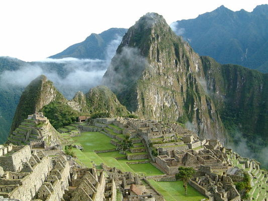

Los incas fueron una gran civilización que se desarrolló en América del Sur desde el siglo XIII hasta el siglo XVI, aproximadamente. Estuvieron ubicados en los actuales territorios de Perú, Bolivia, Ecuador, Argentina y Chile. En su máximo apogeo, el Imperio incaico tuvo cerca de 10 millones de habitantes.
El centro de poder de todo el Imperio incaico estuvo ubicado en
Cusco. En esta ciudad y en sus alrededores, podemos ver hermosas y
majestuosas obras arquitectónicas que hicieron los incas: el Coricancha,
la fortaleza de Sacsayhuamán, Ollantaytambo, Pisac, Qenqo y Machu
Picchu, entre otros.
Los incas fueron la última gran civilización precolombina de América,
en gran medida, porque supieron recoger los conocimientos culturales,
científicos, artísticos y tecnológicos de otras culturas; y porque fueron
muy inteligentes al unificar e integrar el imperio a través del uso
obligatorio de un idioma común: el quechua.